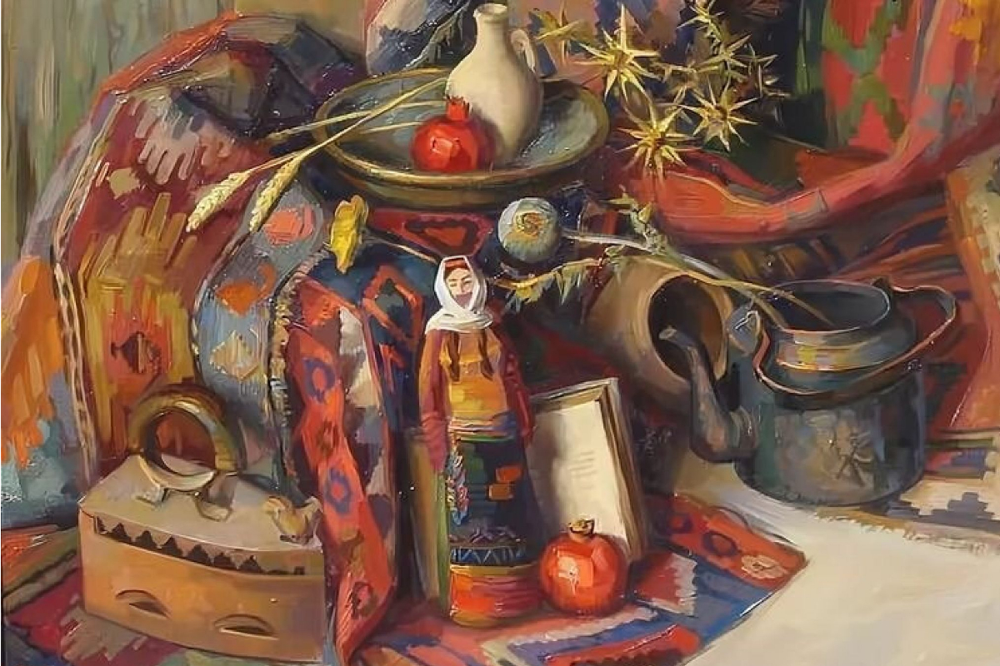
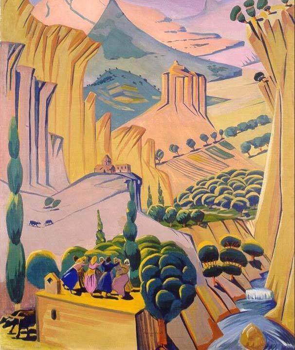

 Այն տոները, որ հայ ժողովուրդը նշում էր դեռևս հարյուր տարի առաջ, շատ քիչ են պահպանվել մեր կենցաղում: Հայաստանի Հանրապետության առանձին ազգագավառներում շարունակում են նշել Վարդավառը, որոշ տեղեր (մասնավորապես' ներկայիս Գեղարքունիքի մարզի Սարտունու, Վարդենիսի շրջաններում) մասամբ նշում են Համբարձումը, իսկ Զատիկի, Տյառնընդառաջի, Սուրբ Խա չի որոշ ծեսեր պահպանվել են համարյա ամենուր: Սակայն տոնակատարությունների ամբողջականությունը զգալիորեն կորուստներ է կրել: Սեկ հարյուրամյակ առաջ նշվող տոներն իրենց տևական պատմությունն են ունեցել, և նրանց ծիսականու բացահայտումն ու վերլուծությունը շերտ առ շերտ ցույց է տալիս ինչպես հայ ժողովրդի անցած պատմական ուղին, այնպես էլ' հազարամյակների ընթացքի տոմարական փոփոխությունները, մարդկանց միջև հարաբերությունների կաղապարները (տղամարդկանց ու կանանց, տարեցների ու երիտասարդների, ազգականների, համայնքի, սոցիալական խմբերի միջև) և դրանց պատճառաբանվածությունը, շրջակա միջավայրի հանդեպ մարդկանց ու անհատի վերաբերմունքը, բնությունից ու երկնային ուժերից ակնկալիքները, ապահով ու անապահով կյանքի մասին պատկերացումները, բնությունից, Երկնային ուժերից, մարդածին ու բնական աղետներից, անհատ մարդկանցից սպասվող վտանգները, տագնապներն ու դրանցից պաշտպանվելու կերպը և այլն: Մեր տոների ժողովրդական արարողություններում կարելի է հանդիպել հայոց նախաքրիստոնեական աստվածությունների կերպարներին, Հայկի ու Բելի ավանդազրույցի դրսևորումներին, Նոյ նահապետի ու ջրհեղեղի մասին պատմությունների հետքերին, քրիստոնեության մուտքին և ընթացքին, քրիստոնեական տոնացույցի «հայացման-ազգայնացմանը» և նախաքրիստոնեական ծեսերի «քրիստոնեացմանը», Ավարայրի ճակատամարտի հիշողություններին, չարի ու բարու մասին հայ ժողովրդի ըմբռնումներին ու պատկերացումներին: Քրիստոնեության ընդունումից հետո, ինչպես աշխարհի շատ ժողովուրդների մոտ, հայ ժողովրդի ավանդական տոնացույցը ևս վերաձևվեց քրիստոնեական աշխարհայացքի և համակարգված տոնացույցի կաղապարով և այդ կերպ գոյատևեց ավելի քան մեկուկես հազարամյակ: Այսօրվա եկեղեցական տոնացույցն անվանապես արտացոլում է այդ մեկուկես հազարամյակի ընթացքում մեր ժողովրդի կենցաղում լիարյուն կյա նքով ապրած բուն ժողովրդական և եկեղեցական տոների ամբողջությունը, հիրավի, այդ երկար ու ձիգ դարերի ընթացքում թե' եկեղեցին, թե' ժողովուրդը նշել են Ծնունդ, Տյառնընդառաջ, Ս.Սարգիս, Բարեկենդան, Ծառզարդար, Զատիկ կամ Ս.Հարություն, Համբարձում, Խաղողօրհնեքի կամ Վերափոխման, Ս. Խաչի տոները, Կանաչ-Կարմիր կիրակիները, Վարդավառը: Թե եկեղեցին, թե'ժողովուրդը նշել են այլ, ավելի կամ պակաս կարևոր տոներ, եղել են ոչ համահայկական ընդգրկվածության, զուտ տեղական տոներ, թերևս դրանց մի մասը մոռացվել է, փոխարինվել ուրիշներով:... Վերը նշվածներն այն տոներն են, որոնք 19-20 դդ. սկզբին նշվում էին ողջ հայ ժողովրդի կողմից և, ըստ երևույթին, իրենց մեջ խտացրել են մեր ժողովրդի տոնականության ընկալումները, առօրյա կյանքից դուրս գալու և տոնական կյանքով ապրելու ձևերը: Ինչպե ՛ս կոչել դրանք, ժողովրդակա ՛ն, ազգայի՛ն, թե' եկեղեցական տոներ: Ընդհանուր առմամբ' դրանք մեծ չափով նույնն են: Տոների մեջ ամբողջացել, ընդհանրացել, նույնացել են ժողովրդականն ու եկեղեցականը: ժողովրդականը հաճախ դարձել է եկեղեցական և ընդունվել եկեղեցու կողմից, եկեղեցական-քրիստոնեականն էլ իր հերթին դուրս է եկել եկեղեցու պատերից և դարձել ժողովրդական կենցաղի անբաժանելի մասը: Անշուշտ' տոների ժամանակ կատարվող ժողովրդական շատ ծեսեր ոչ միայն եկեղեցու կողմից չեն ընդունվում, այլև հակասում են քրիստոնեության տրամաբանությանը: Դրանք բազմաթիվ են. զանազան գուշակությունները, չարխափան կանխարգելիչ ծեսերը, հմայական ծեսերը, վիճակահանությունները, նախաքրիստոնեական աստվածներին կամ ոգիներին ներկայացնող տիկնիկները, կրակի պաշտամունքին առնչվող խարույկները, ջրի պաշտամունքի արարողությունները և այլն: Սակայն դարերի ընթացքում հայ հոգևորականները կարողացել են հաշտվել դրանց անխուսափելի գոյության հետ և երբեմն նույնիսկ մասնակցել դրանց: Այսպիսով' բուն ժողովրդական, այսպես կոչված' ազգային սովորությունների մի մասը պահպանվել, փոխանցվել են սերնդեսերունդ եկեղեցական տոների միջոցով: Ուսումնասիրողները հայ ժողովրդի տոնացույցում բացահայտում են նրա վաղնջական շերտերը, տեսնում արևի ու կրակի, ջրի ու հողի պաշտամունքին նվիրված հանդիսություններ, նախաքրիստոնեական շրջանի աստվածություններին, մասնավորապես երկրագործական աշխատանքները և անձնական ու հասարակական բարեկեցությունը հովանավորող ուժերին նվիրված ծեսեր: Իրենց ծագումով դրանց զգալի մասը գալիս են մեր ժողովրդի ձևավորման շրջանից և պատմության ընթացքում անընդհատ ձևափոխությունների ենթարկվելով, կորցնելով, լրա ցվելով , «ծպտվելով», մասնատվելով և այլն, մինչև այսօր, այնուամենայնիվ, հնարավորություն են տալիս վերլուծել և թափանցել մեր մշակույթի վաղնջական շերտերը: Այս երևույթը առանձնապես բացառիկ չէ: Աշխարհի բազմաթիվ ժողովուրդներ կրոնական, գաղափարախոսական, քաղաքական համակարգերի փոփոխություններից հետո շարունակում են կատարել իրենց ազգային ծեսերը: